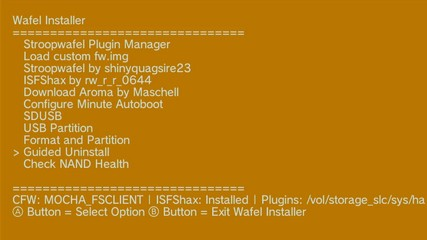
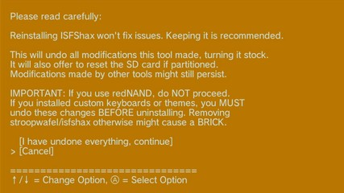
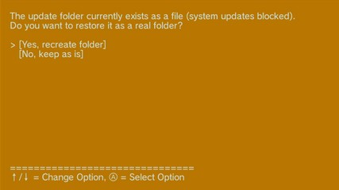
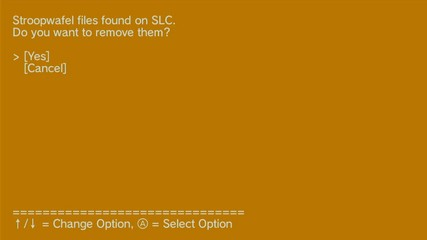
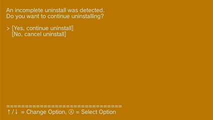
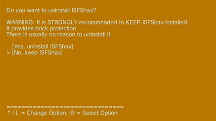
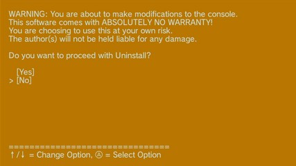

Desinstalar ISFShax
Si deseas eliminar por completo Aroma, Stroopwafel e ISFShax de tu consola, puedes utilizar la opción guided uninstall (desinstalación guiada) dentro de Wafel Installer.
Para garantizar que la consola pueda arrancar de forma segura y sin modificaciones, el proceso de desinstalación se divide en dos fases. La primera fase elimina Stroopwafel, mientras que la segunda completa la desinstalación con opciones para formatear la tarjeta SD y eliminar ISFShax.
Desinstalar modificación del modo virtual Wii (vWii)
Si no modifícate el modo vWii o deseas mantener la modificación, puedes omitir este paso.
Sigue los pasos de este enlace para desinstalar la modificación del modo vWii.
Fase 1: Eliminación de Stroopwafel
- Enciende la consola e inicia la aplicación Wafel Installer (ya sea desde el menú de Wii U, el Homebrew Launcher o a través de
https://wafel.xyzen el navegador de Internet de la consola). - Si Wafel Installer muestra comprobaciones iniciales, cancélalas o aborta el proceso para acceder al menú principal de la aplicación.
- En el menú principal, selecciona la opción Guided Uninstall (desinstalación guiada).
- Verás una advertencia inicial:
- Le atentamente la advertencia. Asegúrese de haber eliminado por completo cualquier tema visual o teclado personalizado instalado en el sistema antes de continuar. Si utilizas redNAND, NO continúes. Si procedes con estas modificaciones activas, tu consola podría quedar inutilizable (*brickeada*). Unicamente si estás totalmente seguro de que es seguro hacerlo selecciona la opción [I have undone everything, continue].
- A continuación, el Wafel Installer realizará automáticamente una Comprobación de Integridad del Sistema para asegurarse de que es seguro desinstalar Stroopwafel de la consola.
- Si la comprobación falla (por ejemplo, debido a archivos del sistema faltantes o modificados, a la detección de múltiples carpetas de región o a que USBMLC/redNAND está activo), la desinstalación se cancelará para evitar que la consola quede inutilizable (*brickeada*).
- Recreación de la carpeta update del sistema: Si tu consola tenía bloqueadas las actualizaciones del sistema (por ejemplo, al reemplazar la carpeta de actualizaciones por un archivo ficticio o al eliminarla), Wafel Installer lo detectará y ofrecerá restaurar la carpeta update original para que las actualizaciones oficiales del sistema puedan funcionar con normalidad:
- Si la comprobación de integridad se supera con éxito, Wafel Installer buscará los archivos de Stroopwafel en la memoria interna (SLC) de la consola y en la tarjeta SD. Dependiendo de dónde se encuentren, se te pedirá que los elimines. Por ejemplo, si se encuentran en la memoria interna (SLC):
- Una vez eliminado Stroopwafel, el instalador te notificará que la consola se reiniciará. Selecciona [OK] y tu consola se reiniciará.

Wafel Installer Stroopwafel Plugin Manager Load custom fw.img Stroopwafel by shinyquagsire23 ISFShax by rw_r_r_0644 Download Aroma by Maschell Configure Minute Autoboot SDUSB USB Partition Format and Partition Guided Uninstall Check NAND Health

Please read carefully: Reinstalling ISFShax won't fix issues. Keeping it is recommended. This will undo all modifications this tool made, turning it stock. It will also offer to reset the SD card if partitioned. Modifications made by other tools might still persist. IMPORTANT: If you use redNAND, do NOT proceed. If you installed custom keyboards or themes, you MUST undo these changes BEFORE uninstalling. Removing stroopwafel/isfshax otherwise might cause a BRICK. [I have undone everything, continue] [Cancel]

The update folder currently exists as a file (system updates blocked). Do you want to restore it as a real folder? [Yes, recreate folder] [No, keep as is]
Selecciona [Yes, recreate folder] para restaurar la carpeta.

Stroopwafel files found on SLC. Do you want to remove them? [Yes] [Cancel]
Selecciona [Yes] (o [Both] si se te solicita elegir entre varias ubicaciones) para eliminar Stroopwafel por completo.
Fase 2: Finalización de la desinstalación (formatear la tarjeta SD y desinstalar ISFShax)
Al eliminar Stroopwafel primero, nos aseguramos de que la consola pueda arrancar correctamente sin cargar ningún *IOS plugin*. Si la consola no arranca tras completar la Fase 1, NO continúes. Puedes recuperar el sistema volviendo a colocar manualmente los archivos de Stroopwafel en la tarjeta SD.
Si la consola arranca correctamente:
- Abre la aplicación del navegador de Internet en la Wii U.
- Toca la barra de direcciones, situada en la parte superior.
- Introduce la URL:
https://wafel.xyz - Toca en Listo (botón en la parte inferior derecha). Deberas ver la página web de Wafel Installer.
- Toca el botón launch en la página web.
- Toca launch de nuevo. Tras unos segundos, debe cargarse Wafel Installer.
- Durante las comprobaciones iniciales, Wafel Installer detectará la desinstalación incompleta y te mostrará un aviso:
- Selecciona [Yes, continue uninstall].

An incomplete uninstall was detected. Do you want to continue uninstalling? [Yes, continue uninstall] [No, cancel uninstall]
Formateo de la tarjeta SD
Wafel Installer te preguntará si deseas formatear la tarjeta SD de nuevo a FAT32. Esto resulta útil si la habías particionado previamente para *juegos de Wii U* y quieres recuperar el espacio:
Do you want to format the entire SD card to FAT32? This will delete ALL data on it. [Yes, format SD] [No, keep as is]
Selecciona [Yes, format SD] para restablecer toda la tarjeta SD al formato FAT32. Esto borrará todo su contenido, incluidos los *juegos de Wii U* y los *archivos homebrew*.
Desinstalación de ISFShax
Por último, se te preguntará si deseas desinstalar ISFShax. En general, se recomienda conservar ISFShax, ya que ofrece protección contra el bloqueo total del sistema (*brick*), pero puedes eliminarlo si deseas devolver la consola a su estado original de fábrica.

Do you want to uninstall ISFShax? WARNING: It is STRONGLY recommended to KEEP ISFShax installed. It provides brick protection There is usually no reason to uninstall it. [Yes, uninstall ISFShax] [No, keep ISFShax]
Si seleccionas [Yes, uninstall ISFShax], verás una advertencia de confirmación final:

WARNING: You are about to make modifications to the console. This software comes with ABSOLUTELY NO WARRANTY! You are choosing to use this at your own risk. The author(s) will not be held liable for any damage. Do you want to proceed with Uninstall? [Yes] [No]
Selecciona [Yes] para finalizar la desinstalación. La consola se reiniciará cuando termine el proceso de desinstalación.